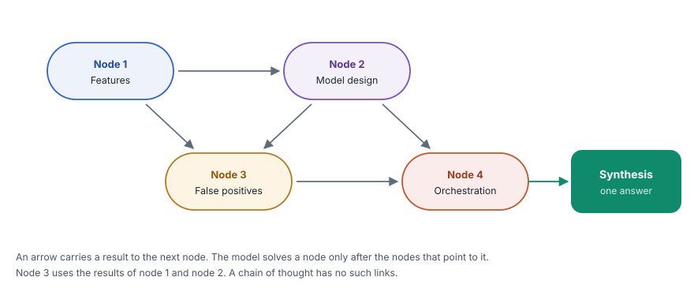

A graph-of-thought prompt splits a problem into connected nodes, solves them in the order of their dependencies and joins the results into one answer.
What you will learn
- Why some problems are a network of connected questions, not a line or a tree
- How a prompt asks the model for nodes, dependencies, solutions and a synthesis
- How to read the dependencies in the answer and check the order
- How the simple version in this chapter relates to the full graph-of-thought method
Read chapter 8 and chapter 9 first. This chapter is the third shape of reasoning after the line and the tree.
The idea
A design problem has many parts, and the parts depend on each other. For a malware detector, the choice of features affects the model, and the model affects the rate of false alarms. A good answer must respect these links. It must decide the features before it designs the model.
A graph of thought treats the problem as a graph. Each node is one sub-question. Each dependency says that a node needs the result of another node. The model solves the nodes without dependencies first, then the nodes that need them. Last, it joins all results into a synthesis, one complete answer.
In a chain, each step uses only the step before it. In a tree, branches stay separate. In a graph, a node can use the results of several other nodes. The full method from research runs each node as a separate call and can merge or refine nodes. This chapter uses a simple version in one prompt.
Think of the construction of a house. The foundation comes first. The walls need the foundation. The roof needs the walls, and the electrical work needs both the walls and the plan of the rooms. A builder follows these dependencies.
When all parts are ready, the house is complete. The plan of the builder is a graph, not a list.
The idea in one picture
The model names four or five nodes, notes the dependencies of each node, solves them in order and writes a synthesis.

What we build in this chapter
Both programs ask design questions in security, where the parts of the answer depend on each other. The first one uses questions about Android malware detection. The second one uses questions about the security of an organization.
Malware detection design with Gemini
- Aim
- Get a structured design for systems that detect and score risky apps.
- Problem
- A detection pipeline, a permission risk score and the retraining of a classifier.
- Input
- Three design questions.
- Expected output
- Nodes with dependencies and a synthesis, for example
NODE 2: Inference Model Architecture
DEPENDS ON: Node 1 - Model
- Gemini 3.1 Flash Lite
Security programs with Qwen
- Aim
- Get a structured plan for large security programs.
- Problem
- A move to zero trust, insider threat detection and alert fatigue.
- Input
- Three design questions.
- Expected output
- Nodes with dependencies and a synthesis, for example
NODE [Budget Constraints]
DEPENDS ON: Zero-Trust Architecture Components - Model
- Qwen 2.5 7B, through OpenRouter
![Data, for i, problem in enumerate(problems, 1), 3 malware detection design problems, one at a time. Template, got_prompt = ChatPromptTemplate.from_template(...), Role, an Android application security engineer, {problem}, 4 to 5 nodes, NODE, DEPENDS ON, SOLUTION, then a synthesis. Model, llm = ChatGoogleGenerativeAI(model="gemini-3.1-flash-lite", temperature=0.5), One long answer for each problem. Parser, StrOutputParser(), Keeps the text. Output, print the problem and the solution, Nodes with dependencies and a synthesis, for example features, model, false positives, orchestration. A loop goes back from stage 5 to stage 1, next problem.](../../assets/img/diagrams/ai-10-ex1-flow.svg)
Step 1Create the file
In your project folder, create the file src/09_graph_of_thought_google.py and open it in your editor.
Step 2Import what you need
from dotenv import load_dotenv
from langchain_google_genai import ChatGoogleGenerativeAI
from langchain_core.prompts import ChatPromptTemplate
from langchain_core.output_parsers import StrOutputParserThe same four imports as in chapters 8 and 9.
Step 3Create the model and the parser
def main():
load_dotenv()
# Initialize the model
llm = ChatGoogleGenerativeAI(
model="gemini-3.1-flash-lite",
temperature=0.5,
)
# Parser to extract the text from the model response
parser = StrOutputParser()temperature=0.5 is between the values of chapters 8 and 9. A design question needs some variety of ideas, but the dependencies must stay logical.
Step 4Write the graph-of-thought prompt
# Create the Graph-of-Thought prompt
got_prompt = ChatPromptTemplate.from_template("""
You are an Android application security engineer.
Solve the following security design problem by building a graph
of interconnected reasoning nodes.
Problem:
{problem}
Instructions:
1. Identify 4-5 key sub-questions or concepts (nodes) needed to solve this problem.
2. For each node, identify its dependencies (which other nodes it relies on).
3. Solve the nodes in dependency order (solve dependencies first).
4. Show how insights from one node inform others.
5. Synthesize all nodes into a final comprehensive answer.
Use this format for each node:
NODE [name]: [description]
DEPENDS ON: [list of nodes or "none"]
SOLUTION: [reasoning and answer for this node]
Solution:
""")- "building a graph of interconnected reasoning nodes" names the method.
- Instruction 1 asks for four or five nodes. A fixed range keeps the answer at a useful size.
- Instructions 2 and 3 ask for the dependencies and for the solutions in dependency order. These two lines make the difference to a chain of thought.
- Instruction 4 asks the model to show how one node informs another. Each link must carry a result, not only a name.
- Instruction 5 asks for the synthesis, the final answer from all nodes.
- The node format. Each node has three lines, NODE, DEPENDS ON and SOLUTION. You can read the graph directly from these lines.
Step 5Join the parts into a chain
# Create the chain
chain = got_prompt | llm | parserStep 6Add the design problems
# Sample security design problems
problems = [
"""
Design a strategy for an Android malware detection pipeline that
balances detection accuracy, a low false-positive rate, and fast
inference time for on-device scanning.
""",
"""
How should an app-store review team design a permission-risk
scoring system that accounts for app category, requested
permissions, and developer reputation?
""",
"""
Design an approach for continuously retraining a permissions and
intents malware classifier as new malware families emerge, while
avoiding catastrophic forgetting of older threats.
""",
]Each problem names goals that compete with each other, for example accuracy, few false alarms and fast scans on a phone. A good design must balance them, so the parts depend on each other.
Step 7Run the chain for each problem
# Invoke the chain for each problem, one at a time
for i, problem in enumerate(problems, 1):
print(f"\n{'=' * 60}")
print(f"PROBLEM {i}")
print("=" * 60)
print(f"\n{problem.strip()}\n")
print("-" * 60)
result = chain.invoke({"problem": problem})
print(result)enumerate(problems, 1)gives each problem a number, starting at 1.iholds the number andproblemholds the text.- The program prints a header with the number before each answer.
Step 8Make the file start main() and run it
if __name__ == "__main__":
main()uv run python src/09_graph_of_thought_google.pyShow the full output156 lines
============================================================
PROBLEM 1
============================================================
Design a strategy for an Android malware detection pipeline that
balances detection accuracy, a low false-positive rate, and fast
inference time for on-device scanning.
------------------------------------------------------------
Direct use of automatic function calling (AFC) in Models.generate_content is not recommended. Instead, we recommend to use AFC in Chat.send_message. Similarly, direct use of AFC in Models.generate_content_stream is not recommended. Instead, we recommend to use AFC in Chat.send_message_stream.
To design an efficient, high-accuracy Android malware detection pipeline, we must balance computational constraints (on-device) with the complexity of modern obfuscation techniques.
### Graph of Interconnected Reasoning Nodes
#### NODE 1: Feature Extraction Strategy
**DEPENDS ON:** None
**SOLUTION:** To balance speed and accuracy, we must avoid heavy dynamic analysis (which drains battery/CPU). We will use a **Hybrid Feature Set**:
* **Static Metadata:** Manifest permissions, API call signatures, and intent filters (Low cost).
* **Structural Features:** Control Flow Graph (CFG) hashes and opcode frequency distributions (Medium cost).
* **Lightweight Heuristics:** Detection of known malicious code patterns (e.g., dynamic code loading, reflection usage) via static analysis.
* *Insight:* By focusing on structural metadata rather than full de-obfuscation, we maintain high speed while capturing the "DNA" of the application.
#### NODE 2: Inference Model Architecture
**DEPENDS ON:** Node 1
**SOLUTION:** We will utilize a **Two-Tiered Detection Architecture**:
* **Tier 1 (The Filter):** A lightweight Random Forest or shallow Neural Network running on-device. It processes simple metadata from Node 1 to perform "fast-path" classification.
* **Tier 2 (The Deep Inspector):** If Tier 1 returns a "Suspicious" score, the app triggers a more complex Transformer-based model (trained on opcode sequences) or offloads the analysis to a secure backend cloud service.
* *Insight:* This tiered approach ensures >95% of benign apps are cleared instantly, while complex malware is handled by more robust (but slower) inference.
#### NODE 3: False-Positive Mitigation & Context
**DEPENDS ON:** Node 1, Node 2
**SOLUTION:** High false-positive rates are often caused by legitimate apps using aggressive obfuscation (e.g., banking apps). We will implement:
* **Allow-listing (Reputation):** Integrate with Google Play Protect or a trusted developer hash database.
* **Behavioral Context:** Instead of just static analysis, we monitor *runtime* behavior (e.g., does the app attempt to access contacts while in the background?).
* *Insight:* By combining static features with runtime context, we reduce false positives triggered by apps that "look" malicious but behave legitimately.
#### NODE 4: Resource-Aware Orchestration
**DEPENDS ON:** Node 2, Node 3
**SOLUTION:** To ensure the pipeline doesn't degrade user experience, we implement an **Orchestration Layer**:
* **Trigger-based Scanning:** Only scan on install, update, or when high-risk permissions are requested.
* **Thermal/Battery Throttling:** If the device is low on battery or overheating, the "Deep Inspector" (Node 2) is deferred or offloaded to the cloud.
* *Insight:* The detection pipeline must be "invisible" to the user, prioritizing system stability over immediate scanning.
---
### Synthesis: Comprehensive Strategy
The proposed Android malware detection pipeline is a **Context-Aware Tiered Pipeline**:
1. **Efficiency via Tiering:** We prioritize speed by using a **Tier 1 lightweight classifier** that analyzes static metadata and structural features (Node 1/2). This allows the system to process the vast majority of apps in milliseconds.
2. **Accuracy via Deep Inspection:** Only apps flagged by the Tier 1 filter are subjected to the **Tier 2 Deep Inspector**. This model uses Transformer-based analysis on opcode sequences to identify sophisticated malware that static analysis misses.
3. **False-Positive Reduction:** We integrate a **Reputation-based Allow-list** and **Behavioral Context** (Node 3). By checking if an app has a verified developer signature or if its runtime behavior matches its static profile, we significantly lower the false-positive rate.
4. **User-Centric Orchestration:** The entire process is managed by an **Orchestration Layer** (Node 4) that defers intensive tasks to the cloud or low-activity periods, ensuring the security pipeline does not impact battery life or device performance.
**Final Outcome:** This design achieves a low-latency "fast-path" for benign apps, a high-accuracy "deep-path" for threats, and a resource-conscious management system that minimizes the performance tax on the user's device.
============================================================
PROBLEM 2
============================================================
How should an app-store review team design a permission-risk
scoring system that accounts for app category, requested
permissions, and developer reputation?
------------------------------------------------------------
As an Android application security engineer, I have structured the design of a permission-risk scoring system into a dependency-based graph.
### The Graph Nodes
1. **NODE [Permission Contextualization]:** Defining the "Normal" vs. "Dangerous" baseline per category.
2. **NODE [Developer Trust Scoring]:** Establishing a reputation metric based on historical behavior.
3. **NODE [Risk Scoring Algorithm]:** Integrating permissions and developer history into a unified score.
4. **NODE [Feedback Loop & Thresholding]:** Implementing dynamic adjustments based on real-world incident data.
---
### Node Solutions
**NODE [Permission Contextualization]**
* **DEPENDS ON:** None
* **SOLUTION:** Permissions cannot be evaluated in a vacuum. We must map permissions to app categories (e.g., a "Flashlight" app requesting `ACCESS_FINE_LOCATION` is an anomaly, whereas a "Navigation" app requesting it is expected). We categorize permissions into risk tiers (Runtime vs. Install-time) and define "Category-Permission Affinity" matrices. If a permission is outside the "expected" scope of a category, it triggers a high-risk flag regardless of other factors.
**NODE [Developer Trust Scoring]**
* **DEPENDS ON:** None
* **SOLUTION:** We create a reputation score based on: (a) Age of the developer account, (b) History of policy violations/malware removals, (c) App update frequency, and (d) Code signing consistency. A high-trust developer (long history, zero violations) acts as a "risk buffer," allowing for slightly more complex permission requests, while new or flagged developers face stricter scrutiny.
**NODE [Risk Scoring Algorithm]**
* **DEPENDS ON:** Permission Contextualization, Developer Trust Scoring
* **SOLUTION:** We use a weighted formula: `Risk Score = (Permission_Deviation_Weight * Permission_Risk) / Developer_Trust_Score`.
* `Permission_Deviation_Weight`: How far the requested permission deviates from the category norm.
* `Permission_Risk`: The inherent sensitivity of the requested API (e.g., `READ_SMS` > `CAMERA`).
* `Developer_Trust_Score`: A multiplier that decreases the total risk if the developer is highly reputable.
**NODE [Feedback Loop & Thresholding]**
* **DEPENDS ON:** Risk Scoring Algorithm
* **SOLUTION:** The system must be dynamic. If an app with a "Medium" risk score is later found to be exfiltrating data, the system automatically retroactively lowers the reputation of the developer and increases the `Permission_Deviation_Weight` for that specific permission in that category. This ensures the model learns from emerging threat patterns (e.g., new malware delivery techniques).
---
### Synthesis: Comprehensive Design
To build an effective permission-risk scoring system, the review team should implement a **Multi-Factor Risk Engine**:
1. **Baseline Categorization:** Start by mapping every app category to a set of "Expected Permissions." This creates a baseline of "normalcy." Any deviation (e.g., a Calculator app asking for `READ_CONTACTS`) is automatically assigned a high-risk penalty.
2. **Reputation-Adjusted Scoring:** Use the Developer Trust Score as a "Risk Multiplier." A developer with a clean, long-standing record earns a "Trust Discount," allowing them to request sensitive permissions with less friction. Conversely, new developers or those with prior policy strikes are subjected to a "High-Scrutiny Multiplier," where even standard permissions undergo manual code analysis.
3. **The Weighted Formula:** The final score is not binary. It is a gradient. Apps scoring below a certain threshold are auto-approved; those in the middle are sent for automated static/dynamic analysis (SAST/DAST); those above the threshold are flagged for manual human review.
4. **Continuous Learning:** The system must integrate with the Play Store’s post-install telemetry. If a specific developer or category shows a spike in malicious activity, the `Risk Scoring Algorithm` should automatically tighten the thresholds for those specific parameters.
**Final Result:** This design moves the review team from a static, manual process to a **risk-based, automated triage system** that prioritizes human attention on the most suspicious applications while streamlining the submission process for high-trust, low-risk developers.
============================================================
PROBLEM 3
============================================================
Design an approach for continuously retraining a permissions and
intents malware classifier as new malware families emerge, while
avoiding catastrophic forgetting of older threats.
------------------------------------------------------------
To design a robust, continuously evolving malware classifier for Android (permissions and intents), we must balance the acquisition of new threat intelligence with the preservation of historical detection capabilities.
### Graph of Reasoning Nodes
#### NODE 1: Data Drift & Concept Evolution
**DESCRIPTION:** Defining how to detect when the feature distribution (permissions/intents) of new malware significantly deviates from the training set.
**DEPENDS ON:** None
**SOLUTION:** We implement a **distributional monitoring layer** using Kullback-Leibler (KL) divergence to track shifts in the feature space. When new malware families emerge, the model encounters "out-of-distribution" samples. By quantifying this drift, we trigger the retraining pipeline only when statistically significant changes occur, preventing unnecessary compute costs and model instability.
#### NODE 2: Replay Buffer Strategy
**DESCRIPTION:** Selecting a representative subset of historical malware data to prevent catastrophic forgetting.
**DEPENDS ON:** NODE 1
**SOLUTION:** We utilize a **Core-Set selection algorithm**. Instead of storing all historical data (which is storage-prohibitive), we maintain a fixed-size "Replay Buffer." This buffer contains high-entropy samples that represent the decision boundaries of older malware families. As new data arrives (triggered by NODE 1), we use a reservoir sampling technique to ensure the buffer maintains a balanced representation of both legacy threats and the newly identified families.
#### NODE 3: Elastic Weight Consolidation (EWC)
**DESCRIPTION:** A regularization technique to protect critical weights learned from past threats.
**DEPENDS ON:** NODE 2
**SOLUTION:** To further mitigate forgetting, we apply **EWC** during the retraining process. We calculate the Fisher Information Matrix to identify which model weights are most critical for classifying historical malware. During the training on new data, we add a penalty term to the loss function that constrains updates to these "critical" weights. This allows the model to learn new patterns while keeping the "memory" of old threats intact.
#### NODE 4: Continuous Evaluation & Feedback Loop
**DESCRIPTION:** Establishing a verification mechanism to ensure the updated model maintains performance on both legacy and new threats.
**DEPENDS ON:** NODE 3
**SOLUTION:** We implement a **"Champion-Challenger" validation framework**. The current production model (Champion) and the newly retrained model (Challenger) are both evaluated against a "Golden Dataset" (a static, curated set of diverse historical and recent threats). The Challenger is only promoted to production if it meets or exceeds the Champion's F1-score on the Golden Dataset, ensuring no regression in detection capabilities.
---
### Synthesis: Comprehensive Solution
To solve the problem of continuous retraining without catastrophic forgetting, we integrate these nodes into a **Feedback-Driven Incremental Learning Pipeline**:
1. **Triggering:** The system monitors incoming Android application telemetry. When the **Data Drift** detector (Node 1) signals that new malware families (e.g., novel intent-based obfuscation) have emerged, the retraining pipeline is initiated.
2. **Data Preparation:** We combine the new malware samples with a representative **Replay Buffer** (Node 2) containing historical threat vectors. This ensures the model is exposed to both the old and the new simultaneously.
3. **Constrained Optimization:** During training, we use **EWC** (Node 3) to freeze or penalize changes to the neural network weights that were essential for identifying legacy malware. This prevents the model from "overwriting" its knowledge of older threats to accommodate the new ones.
4. **Validation & Promotion:** Before deployment, the model undergoes a **Champion-Challenger evaluation** (Node 4). By testing against a static Golden Dataset, we guarantee that the update improves detection of new families without degrading performance on historical threats.
This architecture creates a self-sustaining security cycle: it autonomously detects when it is becoming obsolete, uses memory-efficient data management to retain past knowledge, employs weight-level regularization to prevent forgetting, and enforces rigorous validation to maintain high precision in a shifting Android threat landscape.The nodes and their names change from run to run. The structure of NODE, DEPENDS ON and SOLUTION stays.
The first lines of the output are not from the model. A warning about "automatic function calling (AFC)" comes from the Google library inside LangChain. Such log lines can appear in your output, but they do not change the answer.
The dependencies are logical. Node 3 uses node 1 and node 2, and node 4 uses node 2 and node 3. But the model also writes ">95% of benign apps are cleared instantly." Nothing in the problem gives this number. The model invented it to sound exact. Treat every number in a design answer as a claim that needs a source.
InsideWhat happens inside the calls
The whole graph comes from one call. The model writes the nodes in order, so each later node can use the text of the earlier nodes.
![A sequence diagram with the lanes Your code, got_prompt, llm, Gemini API, parser. Step 1, Your code to got_prompt, chain.invoke({"problem" problem}), the chain starts with the template. Step 2, got_prompt to got_prompt, Fill {problem}, 4 to 5 nodes, NODE, DEPENDS ON, SOLUTION, then a synthesis. Step 3, got_prompt to llm, Prompt value, the filled messages go to the model. Step 4, llm to Gemini API, HTTPS request with the API key, temperature 0.5. Step 5, Gemini API to llm, Nodes and synthesis, for example features, model, false positives, orchestration. Step 6, llm to parser, AIMessage, the chain passes the reply to the parser. Step 7, parser to parser, Keep the text, StrOutputParser returns a string. Step 8, parser to Your code, The result, the code prints the problem and the solution. Steps 1 to 8 repeat, Repeated for each of the 3 problems.](../../assets/img/diagrams/ai-10-ex1-seq.svg)
Full code of Example 1src/09_graph_of_thought_google.pyGitHub
"""
Title: Graph of Thought Prompting (Google Generative AI)
uv run python src/09_graph_of_thought_google.py
"""
from dotenv import load_dotenv
from langchain_google_genai import ChatGoogleGenerativeAI
from langchain_core.prompts import ChatPromptTemplate
from langchain_core.output_parsers import StrOutputParser
def main():
load_dotenv()
# Initialize the model
llm = ChatGoogleGenerativeAI(
model="gemini-3.1-flash-lite",
temperature=0.5,
)
# Parser to extract the text from the model response
parser = StrOutputParser()
# Create the Graph-of-Thought prompt
got_prompt = ChatPromptTemplate.from_template("""
You are an Android application security engineer.
Solve the following security design problem by building a graph
of interconnected reasoning nodes.
Problem:
{problem}
Instructions:
1. Identify 4-5 key sub-questions or concepts (nodes) needed to solve this problem.
2. For each node, identify its dependencies (which other nodes it relies on).
3. Solve the nodes in dependency order (solve dependencies first).
4. Show how insights from one node inform others.
5. Synthesize all nodes into a final comprehensive answer.
Use this format for each node:
NODE [name]: [description]
DEPENDS ON: [list of nodes or "none"]
SOLUTION: [reasoning and answer for this node]
Solution:
""")
# Create the chain
chain = got_prompt | llm | parser
# Sample security design problems
problems = [
"""
Design a strategy for an Android malware detection pipeline that
balances detection accuracy, a low false-positive rate, and fast
inference time for on-device scanning.
""",
"""
How should an app-store review team design a permission-risk
scoring system that accounts for app category, requested
permissions, and developer reputation?
""",
"""
Design an approach for continuously retraining a permissions and
intents malware classifier as new malware families emerge, while
avoiding catastrophic forgetting of older threats.
""",
]
# Invoke the chain for each problem, one at a time
for i, problem in enumerate(problems, 1):
print(f"\n{'=' * 60}")
print(f"PROBLEM {i}")
print("=" * 60)
print(f"\n{problem.strip()}\n")
print("-" * 60)
result = chain.invoke({"problem": problem})
print(result)
if __name__ == "__main__":
main()![Data, for i, problem in enumerate(problems, 1), 3 security program problems, one at a time. Template, got_prompt = ChatPromptTemplate.from_template(...), Role, an experienced security architect, {problem}, The same node format and a synthesis. Model, llm = ChatOpenRouter(model="qwen/qwen-2.5-7b-instruct", temperature=0.5), One long answer for each problem. Parser, StrOutputParser(), Keeps the text. Output, print the problem and the solution, Nodes with dependencies and a synthesis, for example zero trust in five nodes. A loop goes back from stage 5 to stage 1, next problem.](../../assets/img/diagrams/ai-10-ex2-flow.svg)
A Same mark tells you that a line has the same job as before. A New mark tells you what is different.
Steps 1 to 3File, imports, model and parser
from dotenv import load_dotenv
from langchain_openrouter import ChatOpenRouter
from langchain_core.prompts import ChatPromptTemplate
from langchain_core.output_parsers import StrOutputParser
def main():
load_dotenv()
# Initialize the model
llm = ChatOpenRouter(
model="qwen/qwen-2.5-7b-instruct",
temperature=0.5,
)
# Parser to extract the text from the model response
parser = StrOutputParser()- New
ChatOpenRouterwith the Qwen model. - Same
temperature=0.5and the parser.
Step 4Write the graph-of-thought prompt
- NewThe role is "an experienced security architect".
- SameThe five instructions and the node format.
Steps 5 to 8Chain, problems and run
# Sample security design problems
problems = [
"""
Design a strategy for an organisation to migrate from a
perimeter-based security model to a zero-trust architecture,
while maintaining business continuity and staying within a
limited security budget.
""",
"""
How should a company build an insider-threat detection program
that balances employee privacy, detection accuracy, and legal
compliance?
""",
"""
Design an approach for a SOC to reduce alert fatigue while
maintaining detection coverage across cloud, endpoint, and
network telemetry.
""",
]- NewThree problems, a move to zero trust, an insider threat program and alert fatigue in a security operations center (SOC). Zero trust is a model in which no user or device gets trust only because it is inside the network.
- SameThe chain, the numbered loop and the prints.
uv run python src/09_graph_of_thought_openrouter.pyShow the full output199 lines
============================================================
PROBLEM 1
============================================================
Design a strategy for an organisation to migrate from a
perimeter-based security model to a zero-trust architecture,
while maintaining business continuity and staying within a
limited security budget.
------------------------------------------------------------
### Solution:
#### NODE [Current Security Model Analysis]: Analyze the current perimeter-based security model and identify its strengths and weaknesses.
DEPENDS ON: none
SOLUTION:
To transition from a perimeter-based security model to zero-trust, it's crucial to first understand the existing security architecture. This involves identifying how data is protected within the network boundaries, what security controls are in place, and how they interact with business operations. Key aspects include:
- **Firewalls and Network Segmentation**: How these are configured and enforced.
- **Access Control Mechanisms**: Whether they are based on roles, IP addresses, or other criteria.
- **Data Protection Measures**: Encryption, data loss prevention (DLP), etc.
- **Incident Response Plan**: Current processes for detecting and responding to security incidents.
Understanding these elements will help identify areas that need reinforcement or rethinking as part of a zero-trust strategy.
---
#### NODE [Zero-Trust Architecture Components]: Identify the core components required for a zero-trust architecture.
DEPENDS ON: Current Security Model Analysis
SOLUTION:
A zero-trust architecture focuses on several key components:
1. **Identity and Access Management (IAM)**: Ensures only authorized users have access to resources.
2. **Least Privilege Principle**: Users and devices are granted only the minimum necessary permissions.
3. **Continuous Verification**: Regularly validate user and device identities before granting access.
4. **Micro-Segmentation**: Divide the network into smaller segments to limit lateral movement.
5. **Encryption**: Encrypt data both at rest and in transit.
6. **Behavioral Analytics**: Monitor user and system behavior to detect anomalies.
These components will form the foundation of the new security model, ensuring that every connection and interaction is verified and validated.
---
#### NODE [Budget Constraints]: Determine how to allocate the limited security budget effectively.
DEPENDS ON: Zero-Trust Architecture Components
SOLUTION:
Given the limited budget, prioritize investments in critical areas:
1. **IAM Solutions**: Implement robust identity management systems to enforce least privilege and continuous verification.
2. **Network Segmentation Tools**: Deploy tools to facilitate micro-segmentation and secure communication between segments.
3. **Behavioral Analytics Platforms**: Invest in solutions that can monitor and analyze network traffic and user behavior.
4. **Encryption Technologies**: Ensure data is encrypted both at rest and in transit using strong encryption standards.
5. **Automation Tools**: Use automation to reduce manual effort and potential human error.
Allocate funds to these areas while considering cost-effective alternatives and phased implementations to ensure gradual but steady progress towards zero-trust.
---
#### NODE [Business Continuity Plan]: Develop a plan to maintain business continuity during the transition.
DEPENDS ON: Zero-Trust Architecture Components, Budget Constraints
SOLUTION:
To maintain business continuity, develop a comprehensive transition plan:
1. **Phased Implementation**: Gradually roll out zero-trust components to minimize disruption.
2. **Parallel Operations**: Run old and new systems in parallel during the transition phase.
3. **Communication Strategy**: Clearly communicate changes to stakeholders to manage expectations.
4. **Fallback Mechanisms**: Ensure there are backup plans in case certain components fail.
5. **Training Programs**: Educate employees about the new security measures and their role in maintaining security.
By carefully planning and executing the transition, the organization can minimize downtime and ensure smooth operation throughout the process.
---
#### NODE [Risk Assessment and Mitigation]: Conduct a risk assessment to identify potential vulnerabilities and develop mitigation strategies.
DEPENDS ON: Business Continuity Plan, Zero-Trust Architecture Components
SOLUTION:
Conduct a thorough risk assessment to identify potential vulnerabilities and develop mitigation strategies:
1. **Identify Threats**: Assess threats specific to the organization’s industry and environment.
2. **Assess Vulnerabilities**: Evaluate existing security controls against identified threats.
3. **Develop Mitigation Strategies**: For each identified risk, develop specific mitigation strategies.
4. **Regular Audits**: Perform regular audits to ensure compliance and effectiveness of security controls.
5. **Incident Response Plan**: Enhance incident response capabilities to quickly address any breaches.
This step ensures that the organization is prepared for potential security incidents and can respond effectively to protect sensitive information and maintain business operations.
---
### Synthesis:
To migrate from a perimeter-based security model to a zero-trust architecture while maintaining business continuity and staying within a limited security budget, the organization should follow these steps:
1. **Analyze the Current Security Model**: Understand the existing security architecture to identify strengths and weaknesses.
2. **Identify Zero-Trust Components**: Determine the essential components needed for a zero-trust architecture.
3. **Allocate Budget Effectively**: Prioritize investments in critical areas such as IAM, network segmentation, behavioral analytics, and encryption.
4. **Develop a Business Continuity Plan**: Ensure smooth transition by implementing a phased approach, running parallel operations, and providing training.
5. **Conduct Risk Assessment and Mitigation**: Identify potential vulnerabilities and develop strategies to mitigate risks.
By addressing these nodes in dependency order, the organization can systematically transition to a zero-trust architecture, ensuring enhanced security without compromising business operations or exceeding the available budget.
============================================================
PROBLEM 2
============================================================
How should a company build an insider-threat detection program
that balances employee privacy, detection accuracy, and legal
compliance?
------------------------------------------------------------
### Solution:
#### NODE [Employee Privacy Considerations]: What measures can be taken to protect employee privacy while still detecting insider threats?
- **DEPENDS ON:** None
- **SOLUTION:** To protect employee privacy, the company should implement a comprehensive data minimization strategy. This involves collecting only the necessary data for insider threat detection and ensuring that all data is anonymized or pseudonymized where possible. Additionally, implementing strict access controls and monitoring only specific activities related to potential insider threats can help minimize the risk of privacy breaches. Regularly training employees on data protection policies and obtaining their informed consent for data collection are also crucial steps.
#### NODE [Detection Accuracy]: How can the accuracy of insider-threat detection be improved without compromising privacy?
- **DEPENDS ON:** Employee Privacy Considerations
- **SOLUTION:** Improving detection accuracy requires a multi-faceted approach. By leveraging advanced analytics and machine learning algorithms, the system can identify patterns and anomalies that may indicate insider threats. However, these algorithms must be trained on anonymized data to respect privacy constraints. Implementing behavioral analytics that track normal user behavior can help in identifying deviations that could signal malicious activity. Regularly updating the models with new data and conducting thorough validation tests are essential to ensure high accuracy.
#### NODE [Legal Compliance]: Which legal frameworks must be considered when designing an insider-threat detection program?
- **DEPENDS ON:** Employee Privacy Considerations, Detection Accuracy
- **SOLUTION:** The program must comply with various legal frameworks such as GDPR (General Data Protection Regulation), CCPA (California Consumer Privacy Act), and local data protection laws. Ensuring compliance involves conducting a thorough risk assessment to identify potential legal risks and implementing appropriate safeguards. It’s important to have clear documentation of data handling practices, obtain necessary consents from employees, and provide transparency regarding how data is used. Regular audits and compliance checks should be conducted to ensure ongoing adherence to legal requirements.
#### NODE [Balancing Privacy and Detection]: How can the company balance the need for privacy with the requirement for effective threat detection?
- **DEPENDS ON:** Employee Privacy Considerations, Detection Accuracy, Legal Compliance
- **SOLUTION:** Balancing privacy and detection involves creating a robust framework that prioritizes both aspects. The company should establish a clear policy that outlines the scope of data collection and usage. This policy should be communicated transparently to employees and stakeholders. Implementing a layered security approach that includes both technical controls (like encryption and access controls) and organizational controls (such as regular training and awareness programs) can help achieve this balance. Continuous monitoring and feedback mechanisms should be in place to adjust the program based on evolving threats and changing legal landscapes.
#### NODE [Comprehensive Insider-Threat Detection Program]: What components should a comprehensive insider-threat detection program include?
- **DEPENDS ON:** Employee Privacy Considerations, Detection Accuracy, Legal Compliance, Balancing Privacy and Detection
- **SOLUTION:** A comprehensive insider-threat detection program should include several key components:
- **Data Collection:** Collecting relevant data while respecting privacy constraints.
- **Analytics and Machine Learning:** Utilizing advanced analytics and machine learning to detect anomalies.
- **Behavioral Analytics:** Tracking normal user behavior to identify deviations.
- **Access Controls:** Implementing strict access controls to monitor and restrict sensitive activities.
- **Regular Audits:** Conducting regular audits to ensure compliance and effectiveness.
- **Training and Awareness:** Providing regular training and awareness programs for employees.
- **Policy Documentation:** Maintaining clear documentation of policies and procedures.
- **Feedback Mechanisms:** Establishing mechanisms to gather feedback and continuously improve the program.
### Synthesis:
To build an insider-threat detection program that balances employee privacy, detection accuracy, and legal compliance, the company should take a multi-faceted approach. First, it must prioritize employee privacy by implementing data minimization strategies and ensuring data is anonymized or pseudonymized. Next, it should focus on improving detection accuracy through the use of advanced analytics and machine learning, while being mindful of privacy constraints. Legal compliance must be a top priority, requiring the company to adhere to relevant legal frameworks and conduct regular audits. Balancing privacy and detection involves creating a robust framework that respects privacy while effectively detecting threats. Finally, the program should include a range of components such as data collection, analytics, access controls, regular audits, training, and policy documentation to ensure its effectiveness and compliance.
============================================================
PROBLEM 3
============================================================
Design an approach for a SOC to reduce alert fatigue while
maintaining detection coverage across cloud, endpoint, and
network telemetry.
------------------------------------------------------------
### Solution:
#### NODE [1]: Define Key Metrics for Alert Fatigue
**Description:** Establish metrics to quantify alert fatigue, such as the number of alerts per day, false positive rate, and alert resolution time.
**DEPENDS ON:** none
**SOLUTION:** To effectively reduce alert fatigue, we first need to define key performance indicators (KPIs) that will help us measure the current state of alert fatigue. These KPIs include:
- **Number of Alerts Per Day:** This metric helps understand the volume of alerts generated by the SOC.
- **False Positive Rate:** This measures the percentage of alerts that are incorrect or irrelevant.
- **Alert Resolution Time:** This indicates how long it takes to address each alert.
By defining these metrics, we can identify areas where alert fatigue is most prevalent and prioritize improvements.
#### NODE [2]: Identify Common Attack Patterns and Threat Indicators
**Description:** Develop a list of common attack patterns and threat indicators that the SOC should focus on.
**DEPENDS ON:** NODE [1]
**SOLUTION:** Understanding common attack patterns and threat indicators is crucial for reducing alert fatigue while maintaining detection coverage. By focusing on these patterns, the SOC can prioritize alerts that are more likely to be relevant. For example, if phishing attacks are a significant threat in the organization, alerts related to suspicious email activity should be given higher priority.
#### NODE [3]: Implement Automated Correlation Rules
**Description:** Develop automated correlation rules to filter out redundant alerts based on predefined criteria.
**DEPENDS ON:** NODE [1], NODE [2]
**SOLUTION:** Automated correlation rules can significantly reduce alert fatigue by filtering out redundant alerts. These rules can be based on the common attack patterns and threat indicators identified earlier. For instance, if multiple alerts are generated from the same IP address within a short timeframe, they can be correlated into a single alert. This reduces the number of alerts without compromising detection coverage.
#### NODE [4]: Enhance Alert Prioritization Mechanisms
**Description:** Develop a mechanism to prioritize alerts based on their severity and relevance.
**DEPENDS ON:** NODE [1], NODE [2], NODE [3]
**SOLUTION:** To ensure that critical alerts are addressed promptly, an effective prioritization mechanism is essential. This can be achieved through:
- **Severity Levels:** Assigning severity levels to alerts based on potential impact.
- **Relevance Scoring:** Using machine learning models to score alerts based on their likelihood of being relevant.
- **Contextual Information:** Incorporating contextual information such as user behavior and network anomalies to enhance alert prioritization.
By implementing these mechanisms, the SOC can focus on the most critical alerts first, reducing the overall volume of alerts without missing important threats.
#### NODE [5]: Continuous Monitoring and Feedback Loop
**Description:** Establish a continuous monitoring and feedback loop to refine alert handling processes over time.
**DEPENDS ON:** NODE [1], NODE [2], NODE [3], NODE [4]
**SOLUTION:** A continuous monitoring and feedback loop ensures that the alert handling processes are continually refined. This involves:
- **Regular Audits:** Conducting regular audits to assess the effectiveness of alert reduction strategies.
- **User Feedback:** Gathering feedback from SOC analysts to identify areas for improvement.
- **Performance Tuning:** Adjusting alert thresholds and correlation rules based on real-world performance data.
This iterative process helps maintain optimal alert coverage while minimizing alert fatigue.
### Synthesis
To solve the problem of reducing alert fatigue while maintaining detection coverage across cloud, endpoint, and network telemetry, the following comprehensive approach can be implemented:
1. **Define Key Metrics for Alert Fatigue:** Establish metrics to quantify alert fatigue, including the number of alerts per day, false positive rate, and alert resolution time.
2. **Identify Common Attack Patterns and Threat Indicators:** Develop a list of common attack patterns and threat indicators that the SOC should focus on.
3. **Implement Automated Correlation Rules:** Develop automated correlation rules to filter out redundant alerts based on predefined criteria.
4. **Enhance Alert Prioritization Mechanisms:** Develop a mechanism to prioritize alerts based on their severity and relevance.
5. **Continuous Monitoring and Feedback Loop:** Establish a continuous monitoring and feedback loop to refine alert handling processes over time.
By addressing these nodes in dependency order, the SOC can effectively reduce alert fatigue while ensuring comprehensive detection coverage across all telemetry sources.A small model can change the node format between problems, as this output shows.
Qwen follows the format, and some nodes use two earlier nodes. But look at the order in the first problem. The budget node depends only on the architecture node, so the model designs the architecture before it knows the budget. In a real move to zero trust, the budget limits the architecture from the start. Check that the dependencies make sense, not only that they exist.
InsideWhat happens inside the calls
The same chain and node format for security programs.
![A sequence diagram with the lanes Your code, got_prompt, llm, OpenRouter API, parser. Step 1, Your code to got_prompt, chain.invoke({"problem" problem}), the chain starts with the template. Step 2, got_prompt to got_prompt, Fill {problem}, the same node format and a synthesis. Step 3, got_prompt to llm, Prompt value, the filled messages go to the model. Step 4, llm to OpenRouter API, HTTPS request with the API key, temperature 0.5. Step 5, OpenRouter API to llm, Nodes and synthesis, for example zero trust in five nodes. Step 6, llm to parser, AIMessage, the chain passes the reply to the parser. Step 7, parser to parser, Keep the text, StrOutputParser returns a string. Step 8, parser to Your code, The result, the code prints the problem and the solution. Steps 1 to 8 repeat, Repeated for each of the 3 problems.](../../assets/img/diagrams/ai-10-ex2-seq.svg)
Full code of Example 2src/09_graph_of_thought_openrouter.pyGitHub
"""
Title: Graph of Thought Prompting (OpenRouter)
uv run python src/09_graph_of_thought_openrouter.py
"""
from dotenv import load_dotenv
from langchain_openrouter import ChatOpenRouter
from langchain_core.prompts import ChatPromptTemplate
from langchain_core.output_parsers import StrOutputParser
def main():
load_dotenv()
# Initialize the model
llm = ChatOpenRouter(
model="qwen/qwen-2.5-7b-instruct",
temperature=0.5,
)
# Parser to extract the text from the model response
parser = StrOutputParser()
# Create the Graph-of-Thought prompt
got_prompt = ChatPromptTemplate.from_template("""
You are an experienced security architect.
Solve the following security design problem by building a graph
of interconnected reasoning nodes.
Problem:
{problem}
Instructions:
1. Identify 4-5 key sub-questions or concepts (nodes) needed to solve this problem.
2. For each node, identify its dependencies (which other nodes it relies on).
3. Solve the nodes in dependency order (solve dependencies first).
4. Show how insights from one node inform others.
5. Synthesize all nodes into a final comprehensive answer.
Use this format for each node:
NODE [name]: [description]
DEPENDS ON: [list of nodes or "none"]
SOLUTION: [reasoning and answer for this node]
Solution:
""")
# Create the chain
chain = got_prompt | llm | parser
# Sample security design problems
problems = [
"""
Design a strategy for an organisation to migrate from a
perimeter-based security model to a zero-trust architecture,
while maintaining business continuity and staying within a
limited security budget.
""",
"""
How should a company build an insider-threat detection program
that balances employee privacy, detection accuracy, and legal
compliance?
""",
"""
Design an approach for a SOC to reduce alert fatigue while
maintaining detection coverage across cloud, endpoint, and
network telemetry.
""",
]
# Invoke the chain for each problem, one at a time
for i, problem in enumerate(problems, 1):
print(f"\n{'=' * 60}")
print(f"PROBLEM {i}")
print("=" * 60)
print(f"\n{problem.strip()}\n")
print("-" * 60)
result = chain.invoke({"problem": problem})
print(result)
if __name__ == "__main__":
main()Two examples, side by side
| Example 1 | Example 2 | |
|---|---|---|
| Domain | Android malware detection | Security programs of an organization |
| Role | Android application security engineer | Security architect |
| Model | Gemini 3.1 Flash Lite | Qwen 2.5 7B, through OpenRouter |
| Shape of the graph | Logical links, nodes with two inputs | Links exist, but one order is questionable |
| Same | temperature=0.5, the node format, the chain and the numbered loop | |
Which reasoning shape when?
| Shape | Chapter | Good for |
|---|---|---|
| Chain | 8 | One correct way, for example a calculation |
| Tree | 9 | A choice between real alternatives |
| Graph | 10 | A design with parts that depend on each other |
When it works and when it does not
- It works for design and planning questions with several connected parts.
- It is too much for simple questions. The node format then adds length but no value.
- One call has limits. The model plans and solves the graph in one pass. A full system solves each node in a separate call and passes the results along. Chapter 11 shows your first program with two separate calls.
To compare this pattern with the other prompting patterns, open the prompting patterns quick reference.
A structured design answer looks like the work of an expert. That makes its errors more dangerous.
- Invented numbers. A rate such as "95% of apps" can enter a plan or a budget. Ask for the source of every number, or remove it.
- Missing nodes. The model selects four or five nodes. An important topic, for example the privacy of employees or the security of the model itself, can be missing. Compare the nodes with a checklist from your team.
- Confidential designs. A real architecture can reveal weak points of your systems. Use an approved model for such questions.
Check yourself
What does the line DEPENDS ON: Node 1, Node 2 mean?
This node uses the results of node 1 and node 2. The model must solve both of them before this node.
How is a graph different from a chain of thought?
In a chain, each step uses only the step before it. In a graph, a node can use the results of several nodes, and some nodes are independent.
The answer says "this saves 40% of the cost." What do you do with this number?
Treat it as a claim, not a fact. Ask for the source or test it. Models often invent exact numbers to sound convincing.
Design a secure password reset
Ask a local model with Ollama to design a secure password reset for a mobile banking app, as a graph of four nodes. Then draw the graph on paper from the DEPENDS ON lines, and check if the order makes sense.
from langchain_ollama import ChatOllama
llm = ChatOllama(model="llama3.2:3b", temperature=0.5)- Useful nodes are the proof of identity, the reset token, the delivery channel and the protection against abuse.
- A small model writes shorter nodes. Ask for one short paragraph for each node.
Show one solutionsrc/09_graph_of_thought_ollama.py
"""
Title: Graph of Thought Prompting (Ollama)
uv run python src/09_graph_of_thought_ollama.py
"""
from langchain_core.output_parsers import StrOutputParser
from langchain_core.prompts import ChatPromptTemplate
from langchain_ollama import ChatOllama
def main():
llm = ChatOllama(model="llama3.2:3b", temperature=0.5)
parser = StrOutputParser()
got_prompt = ChatPromptTemplate.from_template("""
You are a mobile application security engineer.
Problem: {problem}
1. Identify exactly 4 nodes (sub-questions) needed to solve this problem.
2. For each node, list the nodes it depends on.
3. Solve the nodes in dependency order, in one short paragraph each.
4. Combine all nodes into a final answer.
Use this format for each node:
NODE [name]: [description]
DEPENDS ON: [list of nodes or "none"]
SOLUTION: [answer for this node]
SYNTHESIS:
""")
chain = got_prompt | llm | parser
problem = "Design a secure password reset flow for a mobile banking app."
print(chain.invoke({"problem": problem}))
if __name__ == "__main__":
main()A possible output, shortened. Your nodes will be different.
NODE [Identity proof]: How does the app confirm the user?
DEPENDS ON: none
SOLUTION: Ask for the registered phone number and a second factor.
NODE [Reset token]: What does the user receive?
DEPENDS ON: Identity proof
SOLUTION: A random, single-use token that expires after 10 minutes.
NODE [Delivery channel]: How does the token reach the user?
DEPENDS ON: Reset token
SOLUTION: Through the bank app or SMS, never shown on screen first.
NODE [Abuse protection]: How do we stop attackers?
DEPENDS ON: Identity proof, Reset token, Delivery channel
SOLUTION: Rate limits, alerts to the user and a lock after failed tries.
SYNTHESIS: Confirm the user with two factors, send a short-lived single-use token
through a trusted channel, and protect every step with rate limits and alerts.Key terms at a glance
| Term | Meaning |
|---|---|
| Graph of thought | A method that solves connected sub-questions in the order of their dependencies. |
| Node | One sub-question in the graph. |
| Dependency | A link that shows that a node needs the result of another node. |
| Synthesis | The final answer that joins the results of all nodes. |
| Zero trust | A security model in which nothing gets trust only because of its place in the network. |
| SOC | Security operations center, the team that watches and handles alerts. |
| Chain of thought | One line of steps before the answer. |
| Tree of thought | Several paths, compared before a choice. |